癸卯日
一九第一天
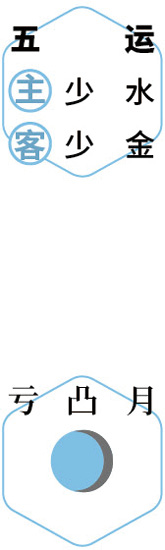
 品酒
品酒仲冬｜节气｜ 冬至 ｜时间｜ 十二月廿二日至一月五日
今年冬至需特别注意的健康问题：心脏不适、皮肤病、失眠
原料：党参、黄芪、甘草、当归、陈皮、带皮生姜、大枣、羊肉。
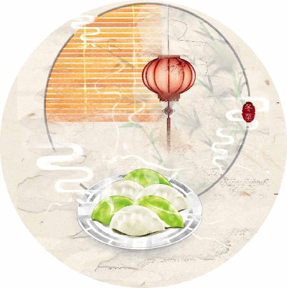
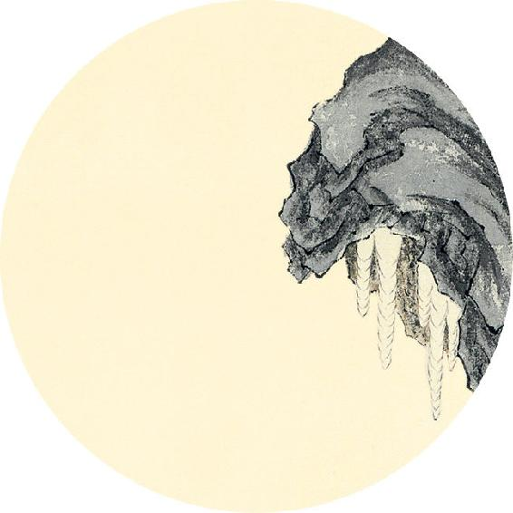
节气食方
参芪补心养阳汤（羊汤版）
原料（2～3人量）：党参30克、黄芪30克、甘草12克、当归12克、陈皮1个、带皮生姜6片、大枣12个、羊肉500克，寒湿重的人加花椒7粒。
做法：
1. 将党参、黄芪、甘草、当归、陈皮用清水浸泡30分钟。
2. 锅内烧开水，羊肉下锅煮出血沫，将水倒掉，羊肉冲洗干净。
3. 锅内重新加水，将全部原料一起下锅，大火煮开后，转中火炖1小时。
【释义】太阳经脉气绝的时候，病人两目上视，身背反张，手足抽搐，面色发白，出绝汗（汗暴出如珠，但不流动，一会儿就干了），绝汗一出，就会死了。
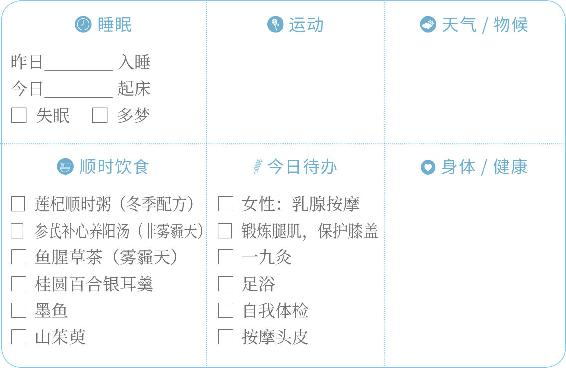

品酒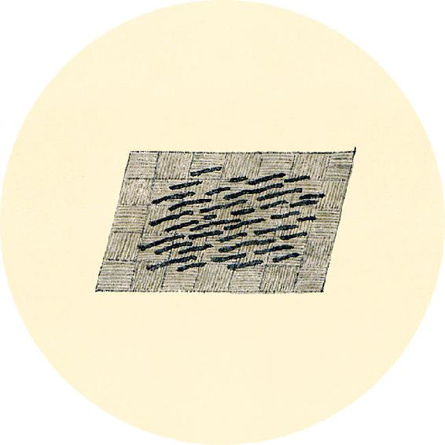
二十四节气茶养生
今年冬至节气品茶推荐：咖啡。
冬至是一年中人体阳气最弱的时候。今年冬至尤其要温养，不宜饮茶，可饮咖啡。
“冬吃苦，把肾补。”深冬时节，人体下半身易有寒湿，宜吃苦味而且温性的食物来燥湿。咖啡就是苦而温的。阳虚胃寒，不敢多喝茶的人，平时也可以用咖啡代茶。
少阳终者，耳聋、百节皆纵，目瞏（huán）绝系。绝系一日半死，其死也。色先青白，乃死矣。
——黄帝内经·素问·诊要经终论
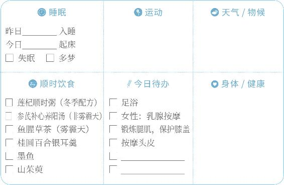
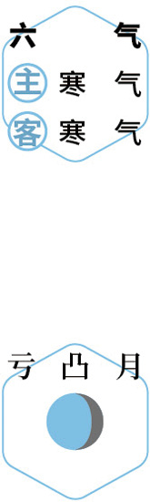
灸艾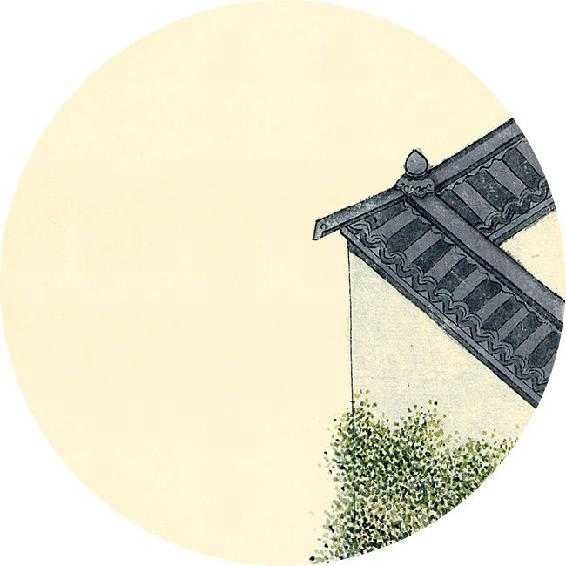
健康提示
冬至节气的养生功课：养心阳。
关于冬至的基本养生方法参见2020年冬至节气内容（本书开始部分）。
今年冬至特殊的养生要点——
保养重点：心、脾、皮肤。
容易出现的问题：心脏不适、皮肤病、失眠。
冬至是心源性猝死的高危时节，此时人体心阳最弱，可以常喝参芪补心养阳汤。
【释义】少阳经脉气绝的时候，病人耳朵听不见声音，周身骨节松懈，两目直视如惊，目系就要断绝。目系一断，一天半就会死，死的时候，病人面上先现出青白色，接着就死了。
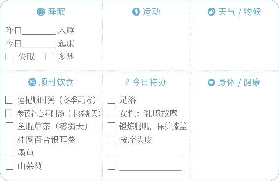
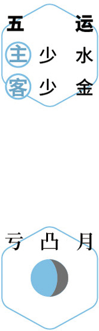
早睡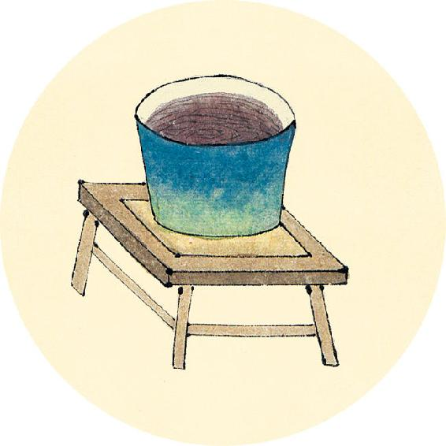
健康提示
今年三九灸的重点部位：
足部——太溪穴（在脚的内踝与跟腱之间凹陷的地方，双脚各一个）
小腿——足三里、膝盖
腹部——神阙（肚脐）、中脘、关元
后腰——命门穴（与肚脐相对）
臀部——八髎穴
肩颈——劳损部位用温经艾灸贴
阳明终者，口目动作，善惊、妄言、色黄。其上下经盛，不仁，则终矣。
——黄帝内经·素问·诊要经终论
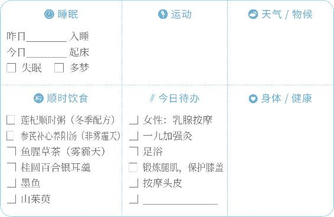
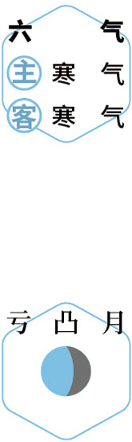
灸艾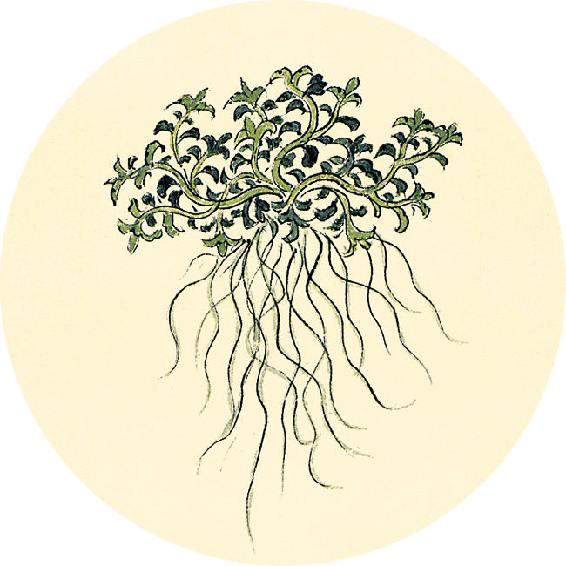
一候反思
回顾过去三次自查的结果
3月13日有几项答“是”________项
5月8日有几项答“是”________项
12月11日有几项答“是”________项
共计________项
□0—2项三九期间灸3次
□3—6项三九期间灸9次
□6项以上三九期间隔天灸1次
三九灸的部位参见本书前面2020年12月23日（庚子岁冬至部分）。
【释义】阳明经脉气绝的时候，病人口眼牵引歪斜而张大，容易惊恐，言语错乱，面色发黄，假如手足二经脉躁盛而肌肉麻木不仁，就要死了。

 养心
养心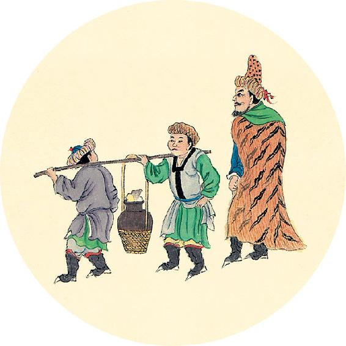
健康提示
咖啡与茶的功效有什么区别？
咖啡和茶有相似之处——都可以提神、祛水、消脂，但是它们的营养成分很不一样。
这是因为茶是植物的叶子，咖啡则是植物的果实。
还有一个重要的区别：茶偏凉性或是寒性，咖啡更偏温性。阳虚胃寒，不敢多饮茶的人，平时也可以用咖啡代茶。
少阴终者，面黑齿长而垢，腹胀闭，上下不通而终矣。
——黄帝内经·素问·诊要经终论
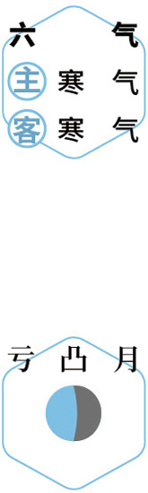
察病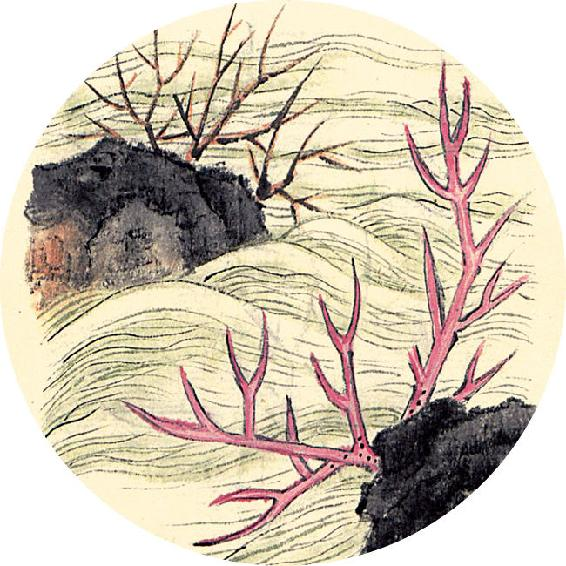
健康提示
护眼小方法
眼部气血不畅通，容易导致眼睛干涩、发红、眼袋、黑眼圈，提前出现老花眼，可以经常按摩和热敷眼睛来促进气血循环。
睡眠不好的人，眼部周围的肌肉会更紧张。睡前热敷一会儿眼睛，让眼肌放松，有助于提高睡眠质量。
【释义】少阴经脉气绝的时候，病人面色发黑，牙龈收缩显得牙齿变长，并积满牙垢，腹部胀闭，上下不相通，就要死亡了。

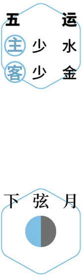
灸艾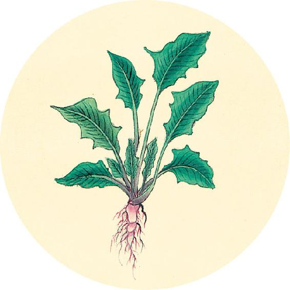
健康提示
护眼小方法
1. 按压法
做法：将双手搓热，覆盖眼部轻柔施压，可以护眼，还能静心养神。
2. 熏蒸法
做法：用桑叶、菊花泡水，利用蒸汽熏蒸眼睛。
3. 热敷法
做法：用中药包加热敷眼睛。
太阴终者，腹胀闭，不得息，善噫善呕，呕则逆，逆则面赤，不逆（“逆”字误，应作“呕”）则上下不通，不通则面黑，皮毛焦而终矣。
——黄帝内经·素问·诊要经终论
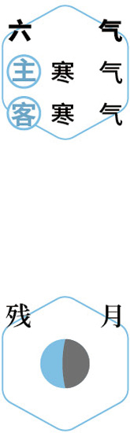
养阳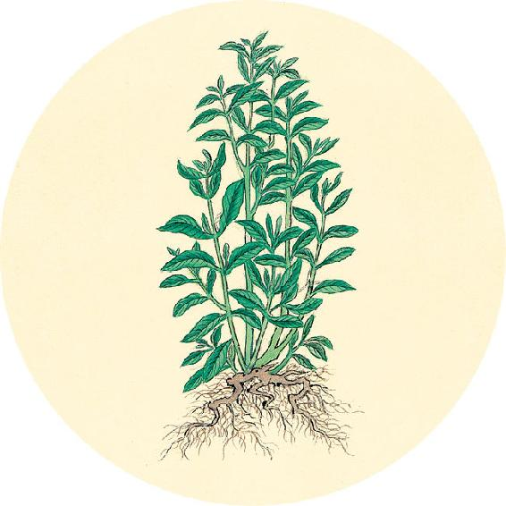
健康提示
“成人痘”的调理方法
有的人二三十岁脸上还长痘，这与青春痘不一样，可以称为“成人痘”。
在急性期，成人痘与青春痘一样，可以通过喝鱼腥草、金银花（见6月8日）来调理，并可外敷马齿苋。
在平时，成人痘根据部位不同，预防的方法也不同。长在下巴部位，可以喝汉宫椒枣茶（姜枣茶加花椒）来预防；长在其他部位，可以喝三花陈皮茶（做法见9月25日）。
【释义】太阴经脉气绝的时候，病人就会腹胀闭塞，呼吸不利，常欲嗳气，常常呕吐，呕则气上逆，气上逆则面赤，假如不呕吐了，就会上下不通，不通则面色发黑，皮毛枯焦，就要死亡了。
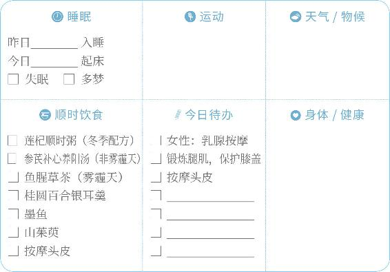
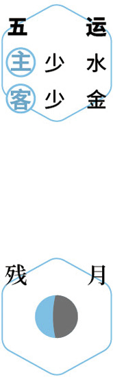
早睡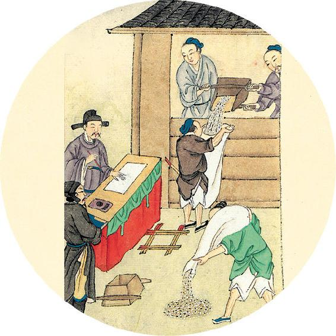
健康提示
感冒、流感等呼吸道传染病调理食方
1. 风寒感冒、重感冒（头痛、怕冷、无汗、鼻塞）
对策：喝葱姜陈皮水。
做法：葱白连须3根、去皮生姜3片、川陈皮1个，煮水。
2. 感冒咳嗽、低热
对策：喝鱼腥草茶。
做法：鱼腥草30克煮水，嗓子痛加1个罗汉果。
3. 感冒高热
对策：蚕沙竹茹陈皮水。
做法：蚕沙30克、竹茹30克、川陈皮1～2个，煮水。
厥阴终者，中热嗌干，善溺、心烦、甚则舌卷，卵上缩而终矣。此十二经之所败也。
——黄帝内经·素问·诊要经终论
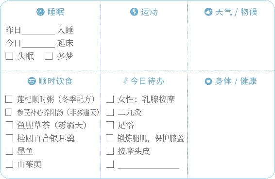
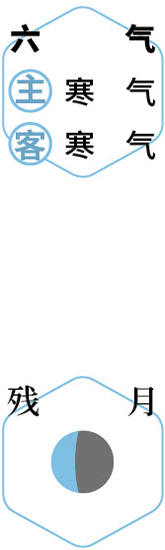
辟螨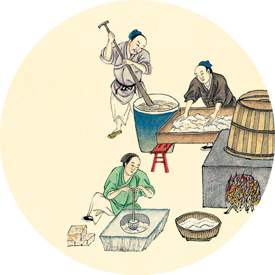
健康提示
从庚子岁冬至到辛丑岁冬至，我们的养生日历完成了一个“养生年”。
回顾每个季末的打分，同时记录每一季的身体状况（1—5分，1分为最差，5分为最好）
养生功课身体状况
庚子岁冬(冬至后）2月2日打________分
辛丑岁春5月4日打________分
辛丑岁夏8月6日打________分
辛丑岁秋11月6日打________分
辛丑岁冬（冬至前）12月20日打________分
哪个季节的身体状况得分最低？明年在这个季节加强调理，重点保养对应这个季节的脏腑。
【释义】厥阴经脉气绝的时候，病人胸中发热，咽干，尿频、心烦，病重的会出现舌头卷缩、睾丸上缩，就会死了。以上就是十二经气败绝的症状。
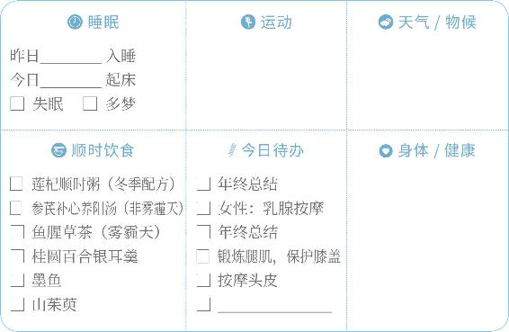
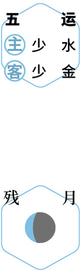
反思